Soulmate Installation Document
- created: 28/12/2015
- latest update: 28/12/2015
- by: Techware Solutions
- email: info@techware.co.in
Soulmate Installation - This is probably the simplest way for most users.
-
Upload the source folder via ftp or file manager
-
Create a database yourdbname.
-
Using the link http://yoursitename.com/soulmate/installer/installer.php run the installer
-
Fill out your database details in the installer and save your changes.
-
A form for filling out your site details, smtp details will appear, enter your details and save your changes.
-
Now you will get your site url, admin url, admin password and username
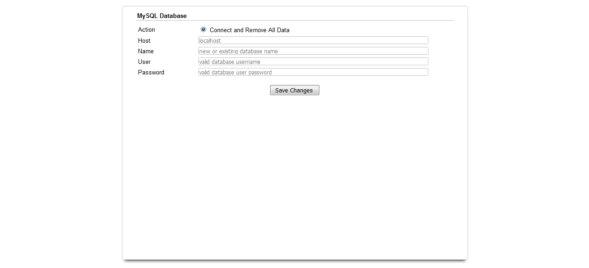
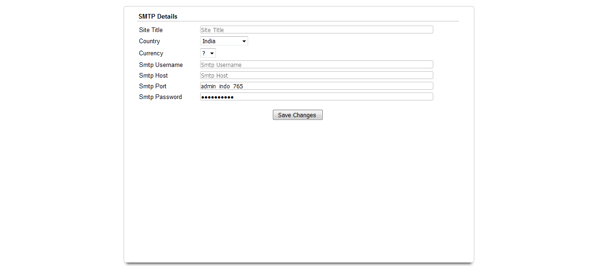
Installing Soulmate
-
Registered User Features
-
Easy and user friendly Sign up, Sign In and Account Password Recovery.
-
Eye catching, user friendly and simple UI/UX.
-
Can edit and manage user profile details and profile photo.
-
Only approved profiles and photos will be shown in search and matching profile modules.
-
Will show your most compatible daily recommendations
-
Premium member profiles are highlighted and shown in the landing page.
-
Filters are used for searching your most compatible and perfect match.
-
Admin Features
-
Full Administration area to manage all Forums, Support Requests, Admins, Users and Site Settings
-
Admin only area to manage All Registered Users
-
Edit & Manage User Details as needed
-
Create & Manage User Accounts
-
Have access and can grant access to users to select and load places by default .
-
Roles can be added and deleted as needed.
-
Full control over settings used throughout the website
-
Different payment packages can be added.
-
Admin Login Details
-
Login using the following url with username and password admin, admin into the soulmate admin panel.
-
Username:admin
-
Password:admin
-
URL:http://solmate.in/admin
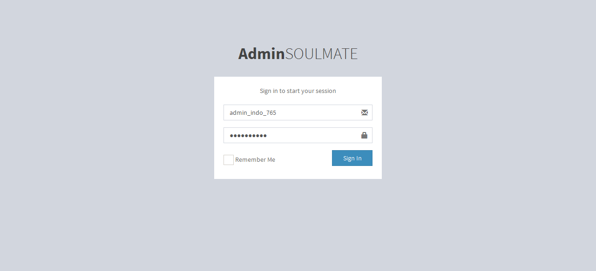
Once you've installed Installer, you can start building your site.
User management is for admin to view and manage the details of the registered users in the backend.
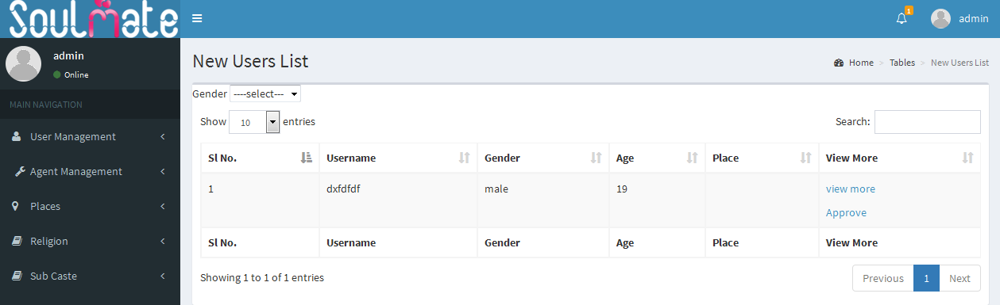
All Users List
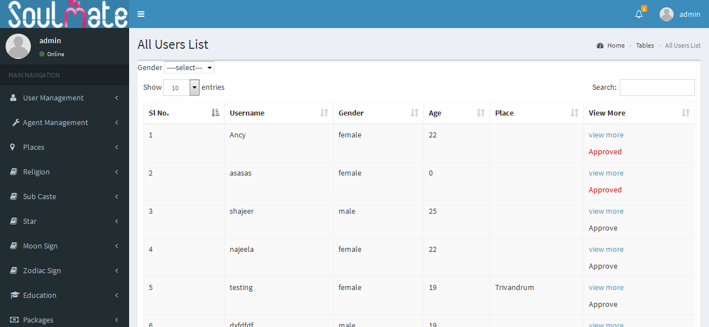
Agent management is for admin to add agent and view the details of the registered agent in the backend.
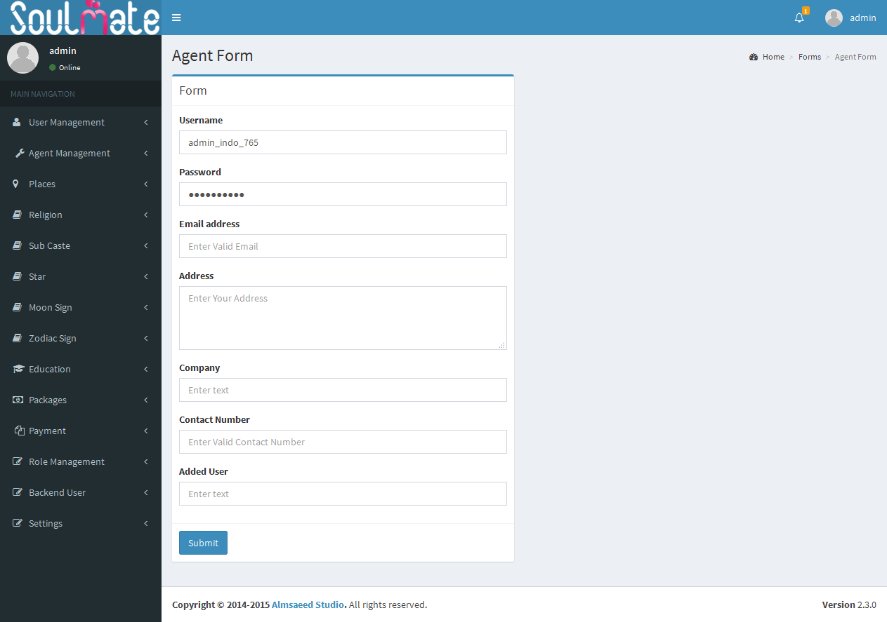
Agent List
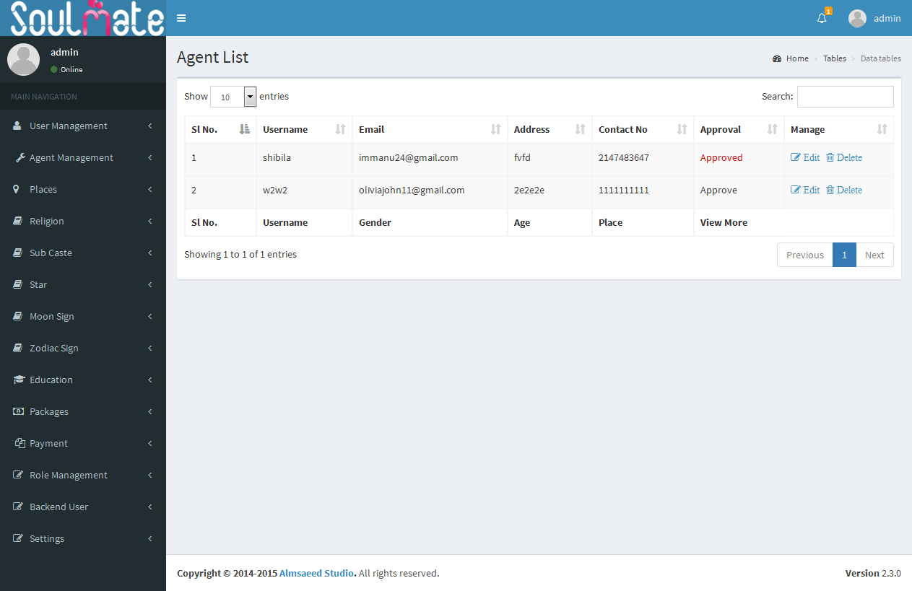
To add and manage the details of places in the backend.
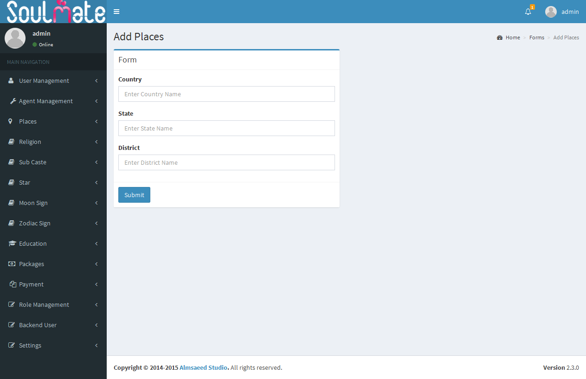
Places List
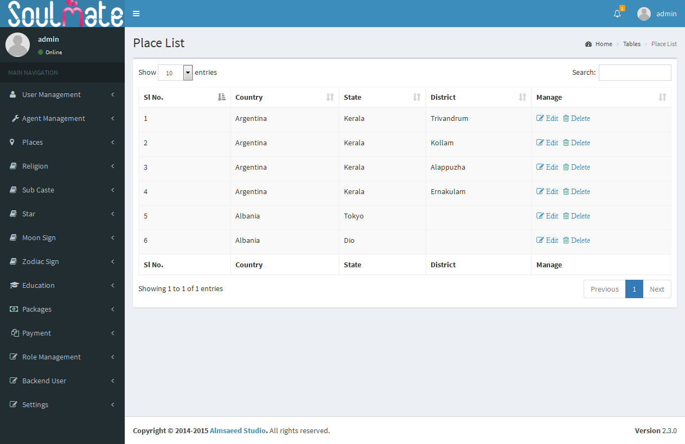
Can add and manage the details of religion in the backend.
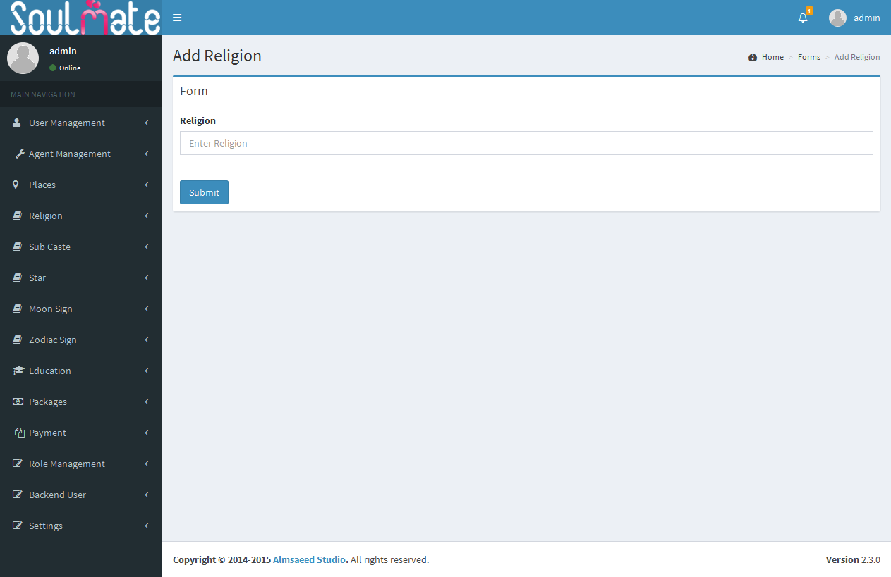
Religion List
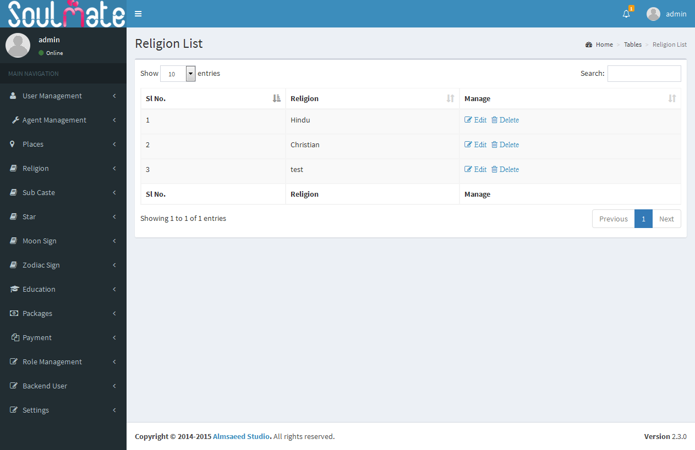
Sub caste is automatically chosen according to religion, can add and manage the details of sub caste in the backend.
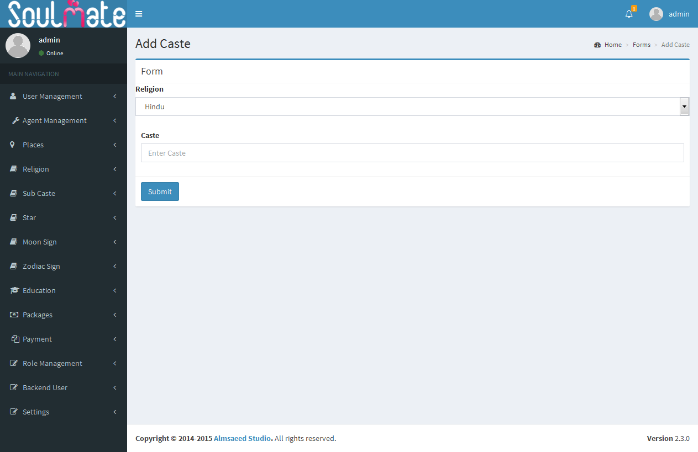
Caste List
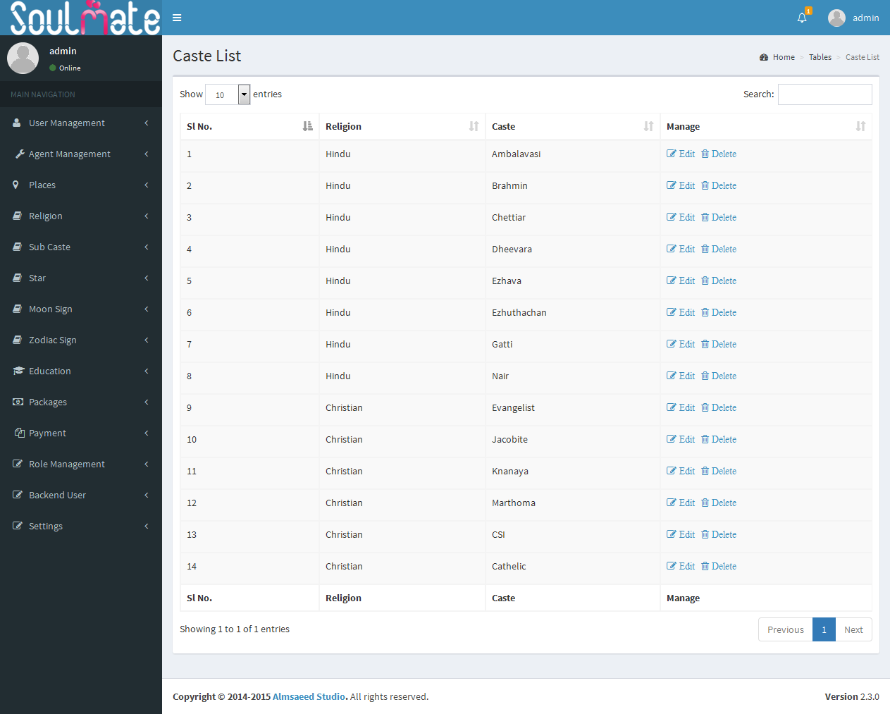
Star management is for admin to view, add and manage the details of the star sign in the backend.
Star List
Moon sign can be chosen according to star sign, moon sign of specific star will be selected.
Rasi List
Can add and manage the details of Zodiac sign in the backend.
Zodiac List
Will list out the details of paid members in backend
Paid Members
This is the main part of the website, everything added in the front end can be edited and updated in this section. Here the site url, title, logo, tagline,currency, measurements, app secret key, smtp details, paypal details, admin email, places whether default or from Google map and sms gateway can be edited.
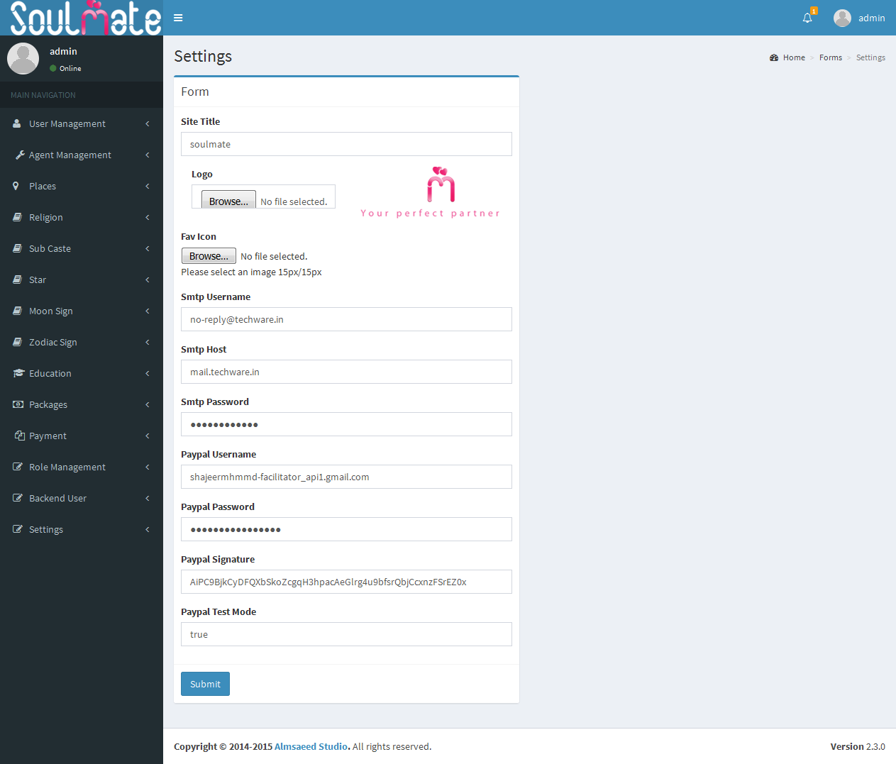
Backend users are those who have access to edit and update the dashboard.
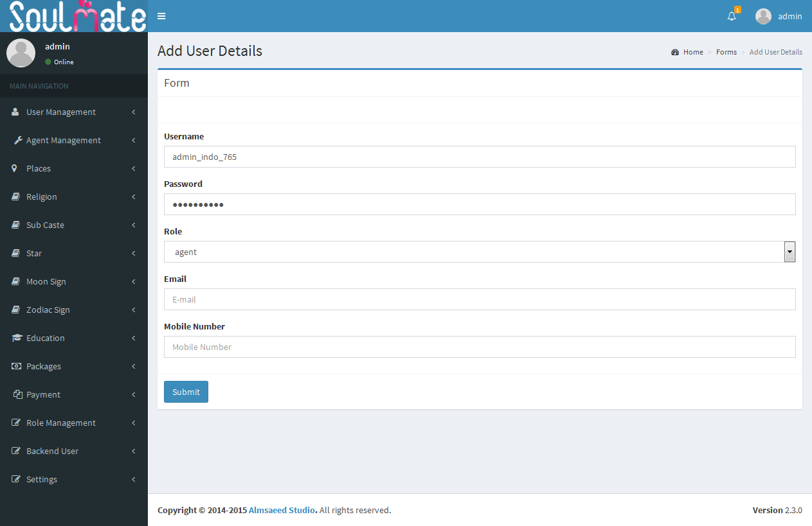